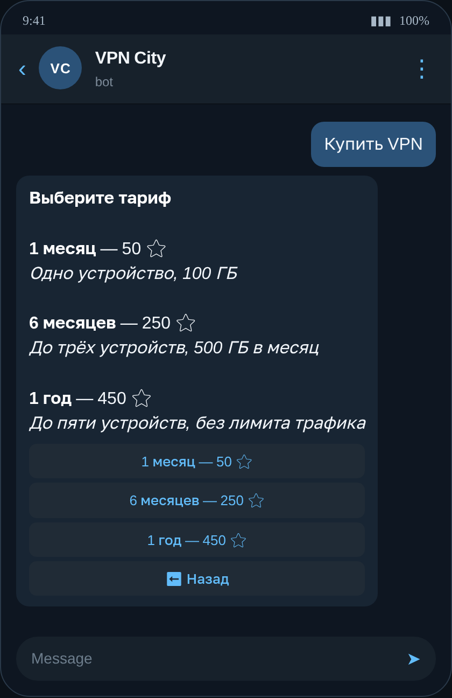
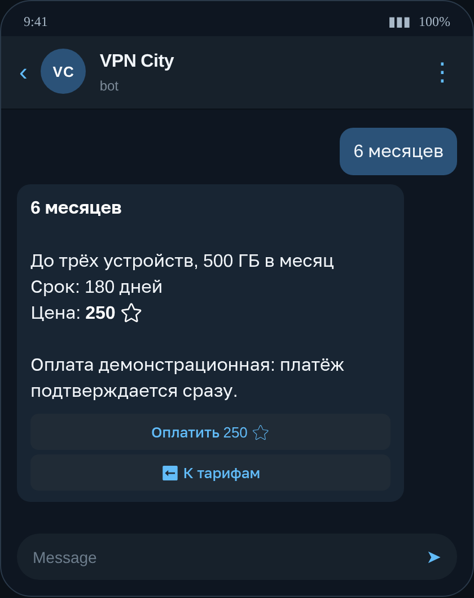
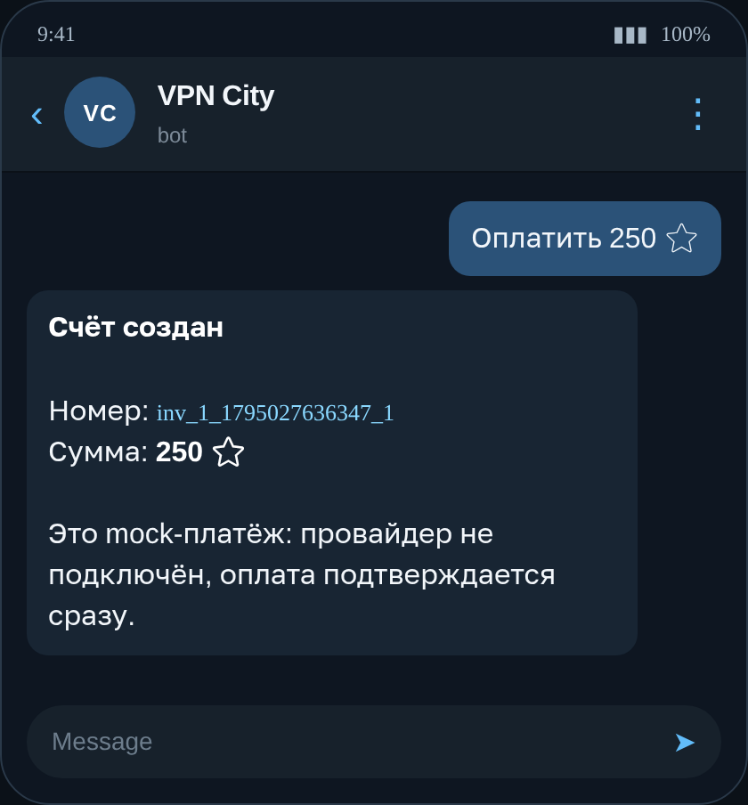
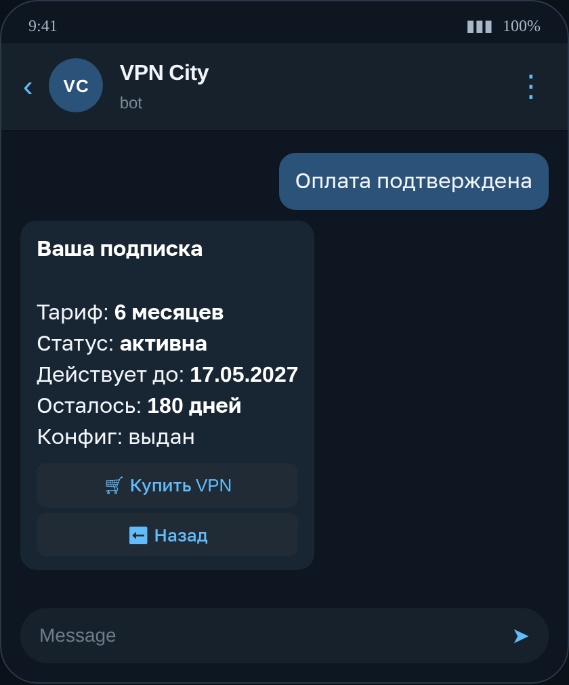

Диалог
telegram / vpncitylong polling
user
/start
bot
VPN City Подписка на VPN с оплатой в Telegram Stars. Тарифы, счёт и выдача конфига — в одном боте.
user
Купить VPN
bot
Выберите тариф 1 месяц — 50 ⭐ 6 месяцев — 250 ⭐ 1 год — 450 ⭐
user
Оплатить 250 ⭐
system
→ счёт создан → mock-платёж подтверждён → конфиг выдан
Экраны




Что умеет
- Три тарифа с ценой в Telegram Stars и сроком.
- Счёт создаётся через отдельный payment gateway.
- Подписка проходит статусы pending → active.
- После оплаты выдаётся VPN-конфиг.
- Статус показывает тариф, срок и остаток дней.
- Домен, приложение и Telegram разделены портами.
- 7 тестов на покупку, оплату и статус.
Как устроено
src/domainплан, подписка, счёт, конфиг, пользователь
src/app3 use case и порты хранилища/платежей/VPN
src/infrain-memory store, mock payment, mock VPN
src/telegrampolling, меню, тарифы, счёт, статус
file tree17 строк
src/
├── domain/
│ ├── plans.ts
│ ├── subscription.ts
│ ├── payment.ts
│ └── vpn-config.ts
├── app/
│ ├── ports.ts
│ └── use-cases.ts
├── infra/
│ ├── in-memory-store.ts
│ ├── mock-payment.ts
│ ├── mock-vpn.ts
│ └── composition.ts
└── telegram/
├── bot.ts
└── views.tsЧто реально, а что mock
Ниже — фактическое состояние проекта. Всё, что помечено как mock или отсутствует, не выдаётся за готовую функцию.
| Пункт | Состояние |
|---|---|
| Оплата | mock mock, без Telegram Payments |
| База | ограничение in-memory, сбрасывается при перезапуске |
| Конфиг | mock mock, не рабочий VPN-сервер |
| Продление | нет нет отдельного сценария |
| Подписка | ограничение одна активная на пользователя |
Как читать таблицу. «Не готово» — реализации нет в репозитории. «Ограничение» — функция есть, но работает в узких рамках. Это проверяется по README и коду.
Запуск
.env
BOT_TOKEN=123456:AA...terminal
bun install
cp .env.example .env
bun run startЧто дальше
- Telegram Payments / Stars с реальным провайдером.
- Postgres для пользователей, счетов и подписок.
- Генерация WireGuard/OpenVPN-конфига на сервере.
- Продление и отзыв доступа по окончании срока.
- Вебхук для платежей и идемпотентность.